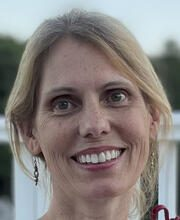

The original article appered in the October 2017 issue of the BWH Clinical & Research News.
Sarah Frisken’s career path has taken her from academics to industry and back again. An electrical engineer by training, Frisken is skilled in computer graphics and has applied her computational expertise in a variety of settings. Mostly recently, she brought her breadth of knowledge to Brigham and Women’s Hospital, where she now works as a research associate in the Department of Neurosurgery.
“I have experience in building commercial grade software and real time systems, which is unique for an academic researcher,” said Frisken.
Something else makes Frisken’s background unique: she is a former Disney consultant. After a foray into academia, Frisken brought her graphics knowledge to Disney’s 2D animation department.
At the time, Disney was still drawing all animations by hand—for reference, it takes about a million drawings to complete a full-length feature film that way. The company wanted to go digital but was having a hard time finding a digital drawing system that fit the needs of animators. Frisken used her knowledge of graphics and shape representation to create software for this purpose. After two years as a contractor for Disney, Frisken leveraged insights and knowhow that she gained there, built a company that produced digital drawing software for every-day artists and eventually sold the company.
Shifting to the Brain
Frisken’s departure from the commercial world allowed her to follow a path to research she has always been drawn to. “When I was a PhD student, anytime I went to a talk about medical topics, I would come out really excited. This seemed like the right time in my life to throw myself into this work,” said Frisken.
There was a steep learning curve for Frisken entering the BWH Department of Neurosurgery to study brain shift—a problem that has complicated neurosurgery for years. “I’d taken a human anatomy course as a postdoc, but other than that I knew next to nothing about brains or surgery,” said Frisken.
Brain shift occurs during brain surgery when factors, like changes in fluid levels and resection of the tumor tissue, alter the shape of the brain. The surgeons might be targeting a tumor to remove, but it’s often close in proximity to important functional components of the brain that need to remain intact. During pre-surgical imaging, the brain is mapped out so surgeons can avoid these important functional areas. Brain shift invalidates a lot of the pre-surgical image data because the functional areas shift positions from the original map, making them difficult to locate.
Frisken is working on ways to measure and model how the brain deforms during surgery and use computer modeling to map where those important regions of the brain have moved during the deformation. This ultimately will provide surgeons with an up-to-date map even after brain shift has occurred. Over the last year, Frisken has collected data during surgery to determine how best to gather this kind of information in real time. Now, she’s working on how to integrate the mapping and modeling piece.
“People have been working on this kind of mapping all over the world for about 20 years now, but what we are doing a little differently is focusing on running this model continuously—not just once or twice during surgery,” said Frisken.
Frisken is gathering more funding for the project, and, over the next year, she will continue designing a new ultrasound device that will allow data collection for surgical mapping to occur much more frequently.
Content carried over from https://ncigt.org/bwh-clinical-research-news-from-disney-to-brain-surgery-the-solution-is-graphics/.